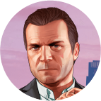
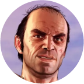
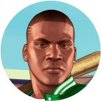

MICHAEL DE SANTA
Ex-assaltante de banco e criminoso conhecido, que fingiu sua morte para se aposentar e viver uma vida pacífica com sua família em Los Santos.
Saiba Mais

TREVOR PHILIPS
Assaltante com um passado complicado, fundou sua companhia, Trevor Philips Enterprises, se envolvendo em tráfico e contrabando de armas
Saiba Mais
